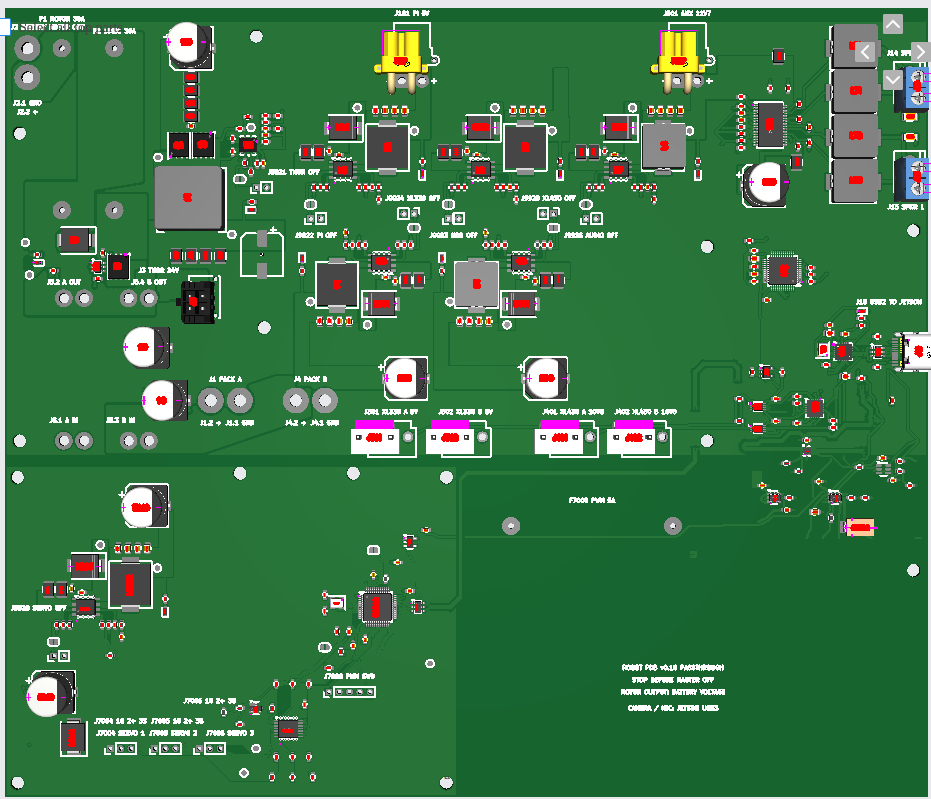
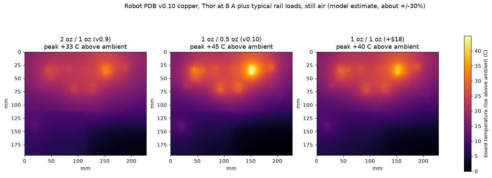

Robot power board v0.11: plain-language walkthrough
Reading this as a visitor? This page was written for the board's owner, so "you" means Logan, and the buying and bench instructions are his notes to himself. The board
has not been ordered; please do not order it from these files. The public summary and the questions open for review are in the
README.
Written 10 November 2026 for the owner. Engineering detail and evidence are in
the v0.11 handoff and the v0.10 handoff. Bench procedures are in the bring-up checklist, written for v0.9 and unchanged.
Where things stand. The compact version of the board (v0.11, 228 × 155 mm) is saved in the JLCPCB cart,
unpaid, at $305.40 before shipping for five bare boards with two of them assembled.
That is $5.40 over the $300 target, which pays for the better Thor coil you approved. Nothing has been ordered. It has been checked by software, but
no hardware exists yet and nothing has been measured, and the newly laid-out servo corner has not had an independent review yet.
Still open before paying. The Thor coil is back to the 60 V part, so that half of the earlier hold is closed.
Two questions remain from the third review: the
six smaller regulator coils are reported as rated 30 V while your packs reach 33.6 V (changing them was estimated at about $13 more),
and whether the big round capacitors tolerate the cheaper assembly line's oven temperature (a question for JLCPCB).
Details are in
the v0.10 handoff.
What this board does
It is the robot's power strip and USB hub in one. Two battery packs come in, pass through your external master switch,
and the board hands out every voltage the robot needs. It also gives the Jetson one USB cable that reaches the speakers,
the Dynamixel servos and three small hobby servos.
- Motors: battery voltage goes straight through a fuse to your existing motor controllers. The board does nothing clever here.
- Jetson Thor: a 24.3 V supply good for the 8 A the Thor kit can draw.
- Servos: 5 V for the XL330s, 10.8 V for the XL430s, and a separate 5 V for three MG90S servos.
- Sound: a USB sound chip and a stereo amplifier for two speakers.
- Spare outputs: a 5 V / 5 A output and an 11.7 V / 5 A output ("AUX") for your own gear.
What plugs in where
The board is 228 mm wide and 155 mm tall. This sketch is to scale, seen from the top.
Orange: battery-side wiring you solder. Grey: fuses you fit. Blue: outputs. Purple: signal and audio.
| Label | Connector | What it is | Who fits it |
|---|
| J1, J4 | XT60 pigtails | The two battery packs. Your packs' XT60 female plugs mate with these. | You solder the pigtails |
| J5 | Four wire pads | Out to your external master switch and back. The switch breaks both pack positives. | You |
| F1, F2 | 30 A fuses | F1 protects the motor output, F2 protects all the electronics. | You |
| J2 | Pigtail | Fused battery voltage to your motor controllers. | You |
| J3 | Micro-Fit, 4 pin | 24.3 V to the Jetson Thor, using the ready-made Molex cable. | Factory |
| J101 | XT30 | 5 V at up to 5 A. Originally for the Pi; now your spare 5 V output. | Factory |
| J501 | XT30 | "AUX": 11.7 V at up to 5 A, shared with the amplifier. | Factory |
| J301, J302 | JST VH, 3 pin | XL330 servo chains: ground, 5 V, data. | Factory |
| J401, J402 | JST VH, 3 pin | XL430 servo chains: ground, 10.8 V, data. | Factory |
| J13, J14 | Screw terminals | Left and right speaker. Neither speaker wire is ground. | Factory |
| J10 | USB-C | One cable to the Jetson for sound, Dynamixel data and servo control. | Factory |
| J7004–J7006 | 3-pin headers | MG90S hobby servos: ground, 5 V, signal. | You |
| F7000 | 5 A fuse | Protects the MG90S servo supply. | You |
| J7008 | 5-pin header | Programming port for the servo controller chip. | You |
The actual board

Top copper layer of v0.11. The bottom strip holds the hobby-servo supply (left), its fuse, the three servo headers and programming header on the bottom edge, and the servo controller chip (right of centre).
What changed in v0.11

v0.10 had an empty quarter because the hobby-servo circuitry was still sitting where a much older version of the board had put it. In v0.11 that one area was laid out again; everything above it, and the USB area on the right, is copper-for-copper the same as v0.10.
| Change | In plain words |
|---|
| Board is 40 mm shorter | 228 × 155 mm instead of 228 × 195 mm. The bare boards cost $5.90 less. |
| Servo supply moved to the corner | The small 5 V regulator for the three hobby servos sits in the bottom-left corner, with its 5 A fuse, big capacitor and surge protector right beside it instead of half a board away. |
| Servo plugs on the bottom edge | The three 3-pin servo headers are in a row on the bottom edge, labelled SERVO 1–3 with 1G 2+ 3S (ground, 5 V, signal). The 5-pin programming header is next to them. The "servo off" jumper J9928 is beside the regulator. |
| Servo controller chip moved next to the USB hub | Its USB wiring is about 63 mm shorter. |
| Three mounting holes moved | The bottom row is now at 151.5 mm from the top edge: 3.5 mm, 105.2 mm and 176 mm from the left. The other twelve holes did not move. Check your mounting. |
| Thor coil back to the good one | The 60 V Coilcraft part from v0.9 again, as you asked. Adds $17.12. |
The connections between the moved pieces were re-drawn by the project's routing program and passed the design-rule check, but no person or second AI has reviewed that corner yet.
What changed from v0.9 to v0.10, and why
v0.10 is not a new design. A script takes the reviewed v0.9 board and applies a short list of changes.
Every part and every trace sits in the same place relative to everything else. The saved v0.9 order was $535.15; v0.10 was $294.18. (v0.11 then undid the Thor inductor line below.)
| Change | In plain words | Saves about |
|---|
| Thinner copper | The copper layers are half as thick. Fine for the currents involved (about 10 A to the motors, 8 A to Thor), but it spreads heat less well. See Heat. | $63 |
| Smaller board | The empty strip along the top and the unused bottom were trimmed: 230 mm tall became 195 mm (and 155 mm in v0.11). | $9 |
| Standard layer build, plain finish | The factory's default internal layer spacing instead of a special one, tin finish instead of gold, and no paid impedance test. | $49 |
| Bigger small holes | 70 of the tiny connecting holes ("vias") were at a size the factory charges extra for. They are now the standard size. | avoids $46 |
| Wider USB traces | The thicker default layer spacing would have thrown off the Jetson USB pair, so those two traces were widened to match the factory's own calculator. | — |
| Cheaper assembly line | The factory's "Economic" service instead of "Standard". Same machines, lower setup fees, fewer extras. | $35 |
| Thor inductor | The $12 Coilcraft coil became a $3.56 equivalent with the same current ratings and the same footprint. Its voltage rating is lower (30 V against 60 V), which is the reason for the hold above. | $17 |
| Thor controller chip | The automotive-grade version became the ordinary version of the same chip. | $9 |
| Thor current-limit resistor | 180 Ω became 220 Ω so the Thor supply cannot cut out below 8 A even with unlucky part tolerances and a low battery. | — |
| One small filter part | Swapped for a no-fee equivalent. | $3 |
| Part orientations | Three parts were shown rotated wrongly in the factory's preview (the two XT30s and the tiny USB switch chip). Corrected and re-checked. | — |
Savings are approximate and overlap; the totals at top are the real quotes.
What to buy
Not yet; see the notice at the top. When you are ready, the entry in the cart is Robot_PDB_v11_Gerbers_Y6. It has two lines that go together:
the boards ($53.75, quantity 5) and the assembly ($251.65, quantity 2). Tick the Y6 checkbox and both are selected.

| Cart entry | What it is | Before shipping | Do |
|---|
| Robot_PDB_v11_Gerbers_Y6 | v0.11, compact board | $305.40 | The one to buy, once the open questions are settled |
| Robot_PDB_v10_Gerbers_Y5 | The final v0.10 (larger board, 30 V Thor coil) | $294.18 | Delete once you commit to v0.11 |
| Robot_PDB_v10_Gerbers_Y4 | Earlier v0.10 build, before the resistor and USB-chip fixes | $294.27 | Delete |
| Robot_PDB_v10_Gerbers_Y3 | First v0.10 build, with a too-small inductor | $289.41 | Delete |
| Robot_PDB_v09_Gerbers_Y2 | The original v0.9, thick copper | $535.15 | Keep as a fallback, or delete once you commit to v0.11 |
Shipping, tax and any coupon are added at checkout. The factory's estimate for shipping the bare boards alone was about $32.
Three things to decide before you click pay
- Mounting holes. The board is 75 mm shorter than v0.9 and the bottom row of holes moved (positions in New in v0.11). Check that your robot's mounting can take the new pattern.
- Finish. The order uses lead-free tin ("HASL"). A gold finish ("ENIG") is flatter and kinder to the tiniest chip on the board, for about $15.60 more (about $321 total). I left it off.
- Stock. Two chips were low at the factory earlier today (30 and 52 pieces). If the cart flags a shortage at checkout, stop and ask rather than accepting a substitute.
Also buy separately
- One TLV3011BIDBVR chip per assembled board (about $2.78). The "B" matters. The factory had none, so you fit it by hand at position U9903.
- Fuses: two 30 A (Littelfuse 0505030.MXEP) and one 5 A (Schurter 8020.5075.PT) per board, plus fuses at each battery pack.
- The Thor cable (Molex 2147551042), XT60 pigtails, your master switch, pin headers, M3 standoffs.
- Chargers for your own gear: see Powering your gear.
After you pay
The order is set so the factory will not start on its own. Expect two emails asking for approval:
- Production file. Their engineers show how they will build the bare board. Check that the layer build says
JLC04161H-7628 and that they have not changed hole sizes or trace widths.
- Parts placement. A picture of every part on the board. The remark on the order asks them to check pin 1 and polarity on every chip, diode and capacitor. Look especially at the parts with a dot or stripe: they must line up with the board marking.

The factory's own preview of the final upload. The yellow XT30s and the USB switch chip were corrected against this view.
One capacitor (C20, below the big coil) shows as an empty outline because the factory has no 3D picture of it; it is on the parts list.
When the boards arrive
You get five bare boards; two have the surface parts and most connectors fitted. They are not ready to run.
Soldering you must do on each assembled board
- Fit the TLV3011BIDBVR at U9903. It is a small six-leg chip; this is the fiddliest job.
- Solder the three fuses (F1, F2, F7000).
- Solder the battery pigtails (J1, J4), the motor pigtail (J2) and the four switch wires (J5). Use 12 AWG and add strain relief; the board must not carry cable weight.
- Fit the three servo headers and the 5-pin programming header.
- Optional: seven small two-pin "OFF" headers. Putting a jumper on one switches that supply off, which is handy for testing one section at a time.
Programming
The chip that drives the three MG90S servos arrives blank. It needs its firmware loaded once through J7008 before those servos will do anything. Everything else works without programming.
First power-up, in order
The full procedure is the bring-up checklist; it applies unchanged. The short version:
- Look over the board for solder bridges, then check with a meter that no output is shorted to ground.
- Use a current-limited bench supply at 27–33 V on one pack input, not a battery. Nothing plugged into the outputs.
- Bring up one supply at a time (use the OFF jumpers) and measure each: 24.3 V, 5 V, 5 V, 10.8 V, 11.7 V, 5 V.
- Load the Thor supply with a dummy load up to 8 A before connecting the Jetson. Meter the Thor cable's polarity first.
- Then USB: plug into the Jetson and confirm the sound card, both serial ports and the servo controller appear. Try the USB-C plug both ways up.
- Only then batteries, then servos, then motors.
Powering your own gear
"AUX" is just the name of the 11.7 V output. The connector is an XT30, the small yellow two-pin plug. Both spare outputs use it, so each lead you plug in needs an XT30 on the end.
A Pi 5, a tablet and two small monitors add up to more than AUX can supply on its own (about 58 W, shared with the amplifier). Spread them out:
| Device | Plug it into | Why |
|---|
| Raspberry Pi 5 | J101, the spare 5 V / 5 A output, with an XT30-to-USB-C lead | That supply was built for the Pi and is otherwise idle. No extra converter. |
| Tablet | A USB-C charger module wired to the battery side through its own small fuse | It is the biggest load and the least essential. This keeps it off the board entirely. |
| Two monitors, plus the amplifier | AUX, through a 12 V USB charger module | About 2 A, comfortably inside the 5 A limit. |
- The Pi 5 only takes its full 5 A after negotiating with a smart supply. From a plain 5 V source it runs, but limits its own USB ports to 0.6 A unless you add
usb_max_current_enable=1 to its config file.
- A battery-side charger module must be rated well above 33.6 V input (look for 40 V or more). Ordinary "12–24 V" car chargers are not safe on the battery.
- If you would rather run the Pi from an AUX charger module with a plain USB cord, that works too; AUX then runs warmer. Move the tablet to the battery-side module in that case.
- Building USB charge ports into the board is possible in a later revision, but would add roughly $20–30 and new layout to this one.
Heat
Thinner copper is the main thing given up to hit the price. I modelled how warm the board gets from its real copper shapes, in still air, with Thor drawing 8 A and typical loads elsewhere (about 12 W of waste heat in total).

| Spot | v0.9 thick copper | v0.10 as ordered | v0.10 with thicker inner layers (+$18) |
|---|
| AUX 11.7 V regulator at 4 A (hottest) | +33 °C | +45 °C | +40 °C |
| Thor supply | +25 °C | +31–33 °C | +28–30 °C |
| XL330 regulator at 2 A | +24 °C | +29 °C | +26 °C |
| Amplifier | +25 °C | +30 °C | +27 °C |
These are rises above the surrounding air. In a 25 °C room the hottest spot would be about 70 °C; in a closed, warm robot body it would be higher. The chips themselves run hotter than the board under them.
- This is an estimate, good to roughly ±30%. With pessimistic airflow the worst spot is +59 °C.
- The hottest spot is AUX because the model loaded it at 4 A. Following the split in Powering your gear brings it down to about 2 A.
- On the bench: run each supply at its real load for 15 minutes and check the regulators with a thermometer or a fingertip-near test. If something is too hot to keep a finger near, add airflow or a stick-on heatsink before trusting it.
Known risks, plainly
| Risk | What could happen | What to do |
|---|
| USB to the servos and sound | Two of the internal USB routes were inherited from an older layout with known shortcomings. They may work fine, or may give errors. | Test with sustained traffic. Fallback is an external USB-to-Dynamixel adapter. |
| Jetson USB pair | Re-sized for the new layer build by calculation; not measured. | Test both plug orientations and unplug/replug. |
| Tin finish on the tiniest chip | The USB switch chip (U9902) has very small pads; an uneven joint there stops all USB. | Inspect it under magnification on arrival. Or pay $15.60 for the gold finish. |
| Newly laid-out servo corner | The hobby-servo supply, its fuse and the wiring to the servo plugs were moved and re-drawn by program in v0.11. It passes the automatic checks but has had no independent review. | Have it reviewed before paying. On the bench, check that supply reads 5 V and runs cool before plugging in servos. |
| Six smaller regulator coils | Reported as rated 30 V; the packs reach 33.6 V. | Decide before paying: accept, or swap to higher-voltage coils (about $13). |
| Heat | Modelled, not measured. | See Heat. |
| Part orientation | Three were caught and fixed; others have not been checked one by one. | Check the factory's placement picture before approving. |
| Mounting holes | The pattern changed. | Confirm fit before paying. |
The 30 A motor fuse is a fuse rating, not a promise that the board carries 30 A all day. The design assumes about 10 A to the motors.
How it was checked
- Design-rule check: zero errors and zero unconnected pads. Thirteen cosmetic warnings, the same ones v0.9 has.
- v0.11 difference audit: a second script compares v0.11 against v0.10 and passes only if nothing outside the servo corner changed (apart from the shortened USB run to the servo controller), no part or connection changed inside it, everything is connected, and the schematic still matches.
- v0.10 difference audit: a script compares v0.10 against v0.9 and passes only if every difference is on the list above. It covers all 366 parts, 1,195 pads, 3,488 trace segments, every hole and every copper pour, and confirms the schematic and board agree.
- Factory upload: for v0.11 the factory read the files as a 4-layer 155 × 228 mm board, matched all 81 lines of the parts list, and priced it on the cheaper assembly line. The moved parts sit on their pads in its preview.
- Second opinion: Google's Gemini (Argon) reviewed it twice. Its first verdict was "do not order". The findings that held up were fixed: the first replacement inductor was too small, and three parts were rotated wrongly. Two of its "blockers" were its own mistakes, which it accepted on the second pass, when its verdict became "order with named changes". Those changes are in the final build. Argon has not seen v0.11.
- Not done: nothing has been built or measured. The heat figures and USB trace sizes are calculations.
Files: board revisions/v0.11/kicad/robot_pdb.kicad_pcb (fingerprint starts 1c351a03d3f0),
factory package outputs/v11-order-preparation/package-1c351a03d3f0/, quote record outputs/v11-order-preparation/factory-quote.json.
Glossary
| Bare board / assembled board | A bare board is just the printed circuit. An assembled board has the parts soldered on by the factory. You are buying five bare, two of them assembled. |
| Copper weight (oz) | How thick the copper layers are. "2 oz" is twice as thick as "1 oz". Thicker carries more current and spreads heat better, and costs more. |
| Layer build ("stackup") | The sandwich of copper and fibreglass inside the board. The spacing between layers affects fast signals like USB. |
| Via | A small plated hole that connects a trace on one layer to another layer. |
| HASL / ENIG | The coating on the bare pads before soldering. HASL is tin, cheap and slightly uneven. ENIG is gold, flat and dearer. |
| Basic / Extended parts | The factory keeps "Basic" parts loaded on its machines. Each "Extended" part type costs about $3 extra to load for your order. |
| Regulator ("buck") | A circuit that turns battery voltage into a lower, steady voltage. Each output on this board has its own. |
| Inductor | A coil inside each regulator. If pushed past its "saturation" current it stops working properly, which is why the first cheap replacement was rejected. |
| Current limit | The point where a regulator protects itself by cutting out. |
| XT30 / XT60 | Yellow two-pin power plugs. XT60 is the bigger one on your batteries; XT30 is the smaller one on the 5 V and AUX outputs. |
| Pin 1 | The corner of a chip marked with a dot. It must match the mark on the board or the chip is in backwards. |